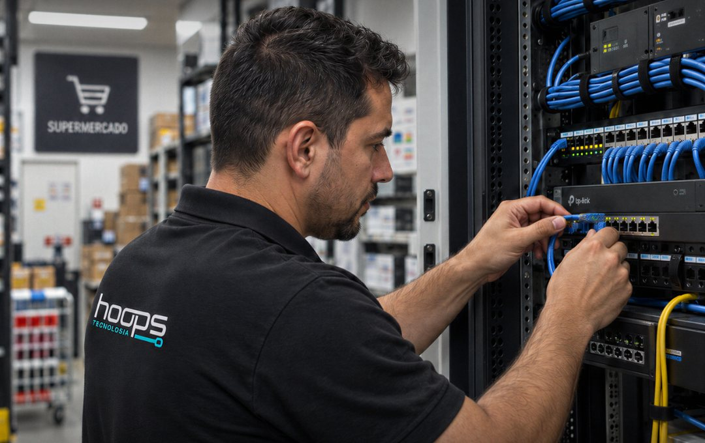

Fila parada
Fila parada significa vendas abandonadas no balcão e clientes migrando para a concorrência.

TI para varejo
O varejo não tira folga no fim de semana. O NOC da Hoops monitora a sua operação 24/7.
Simulação ilustrativa
01 — Riscos do setor
Fila parada significa vendas abandonadas no balcão e clientes migrando para a concorrência.
Se a TI improvisada trava a emissão de notas, você está perdendo dinheiro agora.
O varejo não tira folga, e os criminosos digitais sabem disso. Suporte só em horário comercial é um convite ao prejuízo.
Parece barato até o dia de maior movimento: sistema caído, notas travadas e equipe parada.
02 — O que a Hoops faz
Sua rede acompanhada o tempo todo, para agir quando algo foge do normal, antes de virar parada.
Barreiras que filtram ameaças antes que elas cheguem à caixa de entrada, com firewalls, monitoramento e auditorias.
A Hoops faz a gestão do seu backup corporativo com Acronis, para que os dados possam ser recuperados se o pior acontecer.
Entregue a gestão da sua infraestrutura de tecnologia a especialistas, do suporte técnico à manutenção.
03 — Como funciona
A Hoops avalia a sua rede e mostra onde estão os riscos.
Você recebe o que precisa ser feito, com a proposta para a sua empresa.
A Hoops coloca o plano em prática e conecta sua rede ao monitoramento.
Sua rede passa a ser acompanhada de dia, de noite e no fim de semana.
04 — Outros segmentos
05 — Diagnóstico gratuito